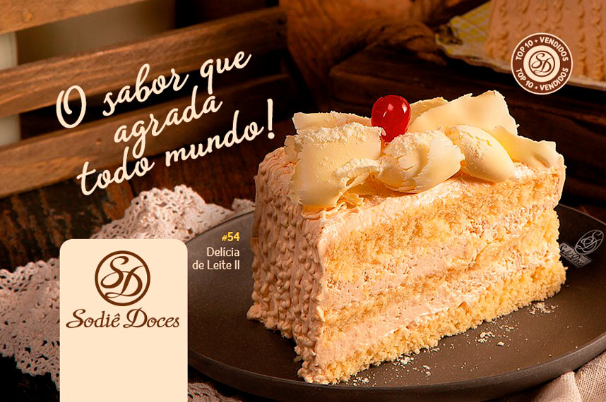

| HOME PRODUTOS SOBRE CONTATO |

Cleusa começou seu negócio em um espaço de 20m² na cidade de Salto, interior de São Paulo. De família pobre, foi boia-fria, cortadora de cana-de-açúcar e, depois, empregada doméstica. A grande oportunidade aconteceu quando era funcionária de uma empresa de alto-falantes. A mulher de seu patrão fazia bolos para fora e, quando teve um problema de saúde, pediu para que ela a ajudasse, até que acabou por parar com a venda de bolos e deixou que Cleusa continuasse o negócio. A futura empreendedora passou a fazer os bolos e os levava a pé aos clientes. Com o passar dos anos, as receitas foram aprimoradas e, com a ajuda de sua mãe, conseguiu abrir pequeno comércio em Salto.
Quatro anos depois, mudou o empreendimento para um espaço de 80m² - quatro vezes maior do que o primeiro, e foi abrindo outras lojas, em cidades próximas como Sorocaba, Americana, Itu e Indaiatuba.
A Sodiê Doces virou franquia. Por incentivo de um dos clientes, Cleusa investiu em cursos sobre franquias, sem fazer ideia do que se tratava o assunto. A empresária vendeu a primeira licença de Franquia, justamente para este cliente que a incentivou.
Dois anos após a abertura da primeira franquia, a Sodiê Doces já contava com total de 50 lojas franqueadas.
O início da sucessão do negócio foi marcado pela inauguração da primeira fábrica de salgados da rede, comandada por Diego, filho de Cleusa, que lançou a marca Sodiê Salgados.
A Sodiê Doces abre sua primeira loja fora do Brasil, em Orlando, nos EUA.
A rede soma mais de 360 lojas espalhadas por todo Brasil e duas em Orlando.